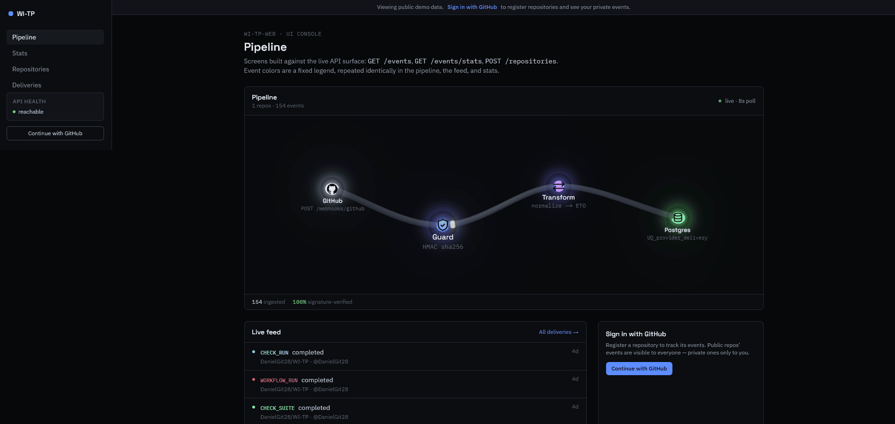

WI-TP — Webhook Ingestion & Transformation Pipeline
A live console for GitHub webhook deliveries: HMAC-SHA256 verified, deduplicated, and normalized in real time. NestJS backend with GitHub OAuth and JWT guards, an ETL-pattern normalization pipeline, and idempotent PostgreSQL persistence through TypeORM. Registering a repository installs its webhook automatically through the GitHub API. Deployed to Cloud Run by GitHub Actions authenticated with Workload Identity Federation — keyless, no service account keys. The Next.js frontend renders every delivery travelling GitHub → Guard → Transform → Postgres as a WebGL scene.
NESTJS · TYPEORM · POSTGRESQL · CLOUD RUN · GITHUB ACTIONS · NEXT.JS · REACT THREE FIBER
The demo shows real, live public data — no account needed to look around.

UI console — the pipeline as a live WebGL scene, with a feed of signature-verified deliveries beside it.